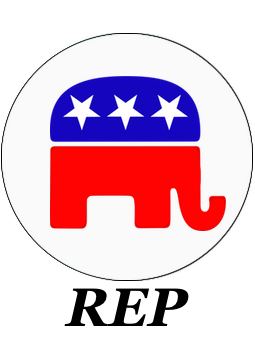
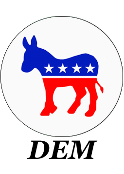

Election Betting Odds
By Maxim Lott and John Stossel
Presidency 2024 (by party)Bets on which party will control the Presidency after Nov 5, 2024 elections $1,317,789 bet so far |
|||||||||||
|---|---|---|---|---|---|---|---|---|---|---|---|
|

REP details
|
54.5% |
||||||||||
|

DEM details
|
45.5% +0.0% |
About these odds and FAQ | By Maxim Lott and John Stossel | Odds update every minute
| Tweet
Copyright 2022, FTX Trading Ltd